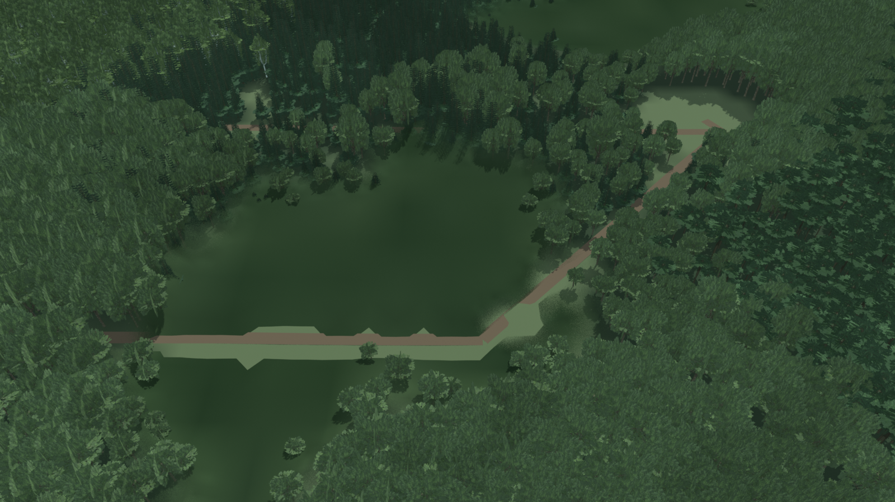
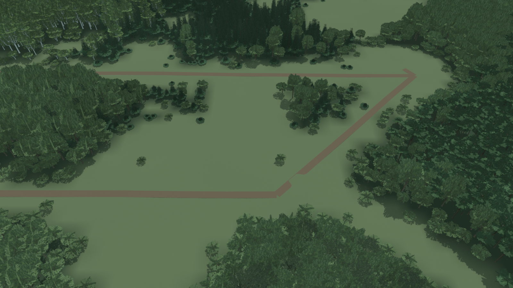
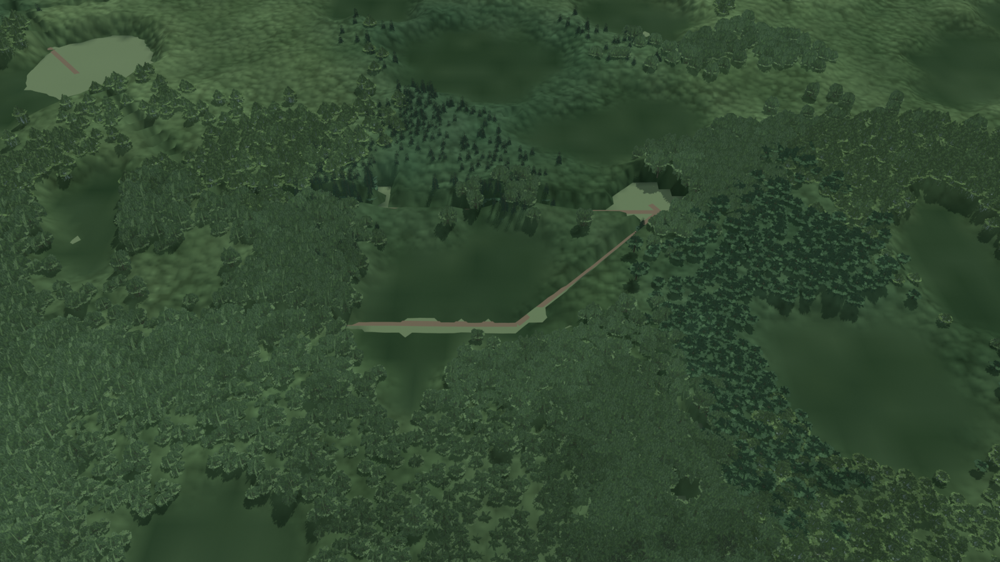
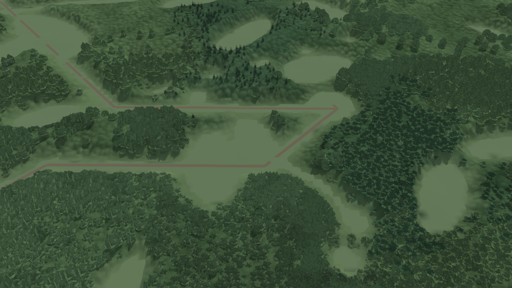
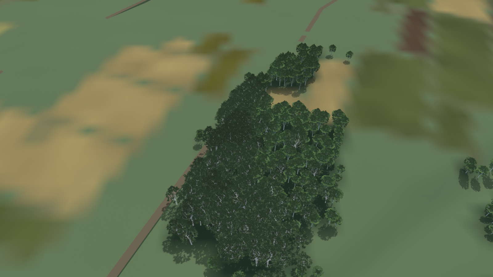
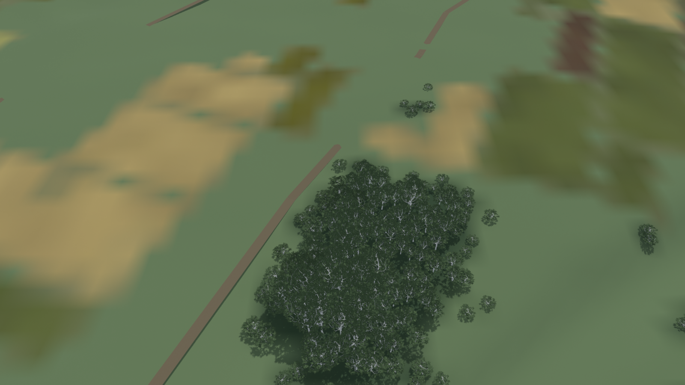
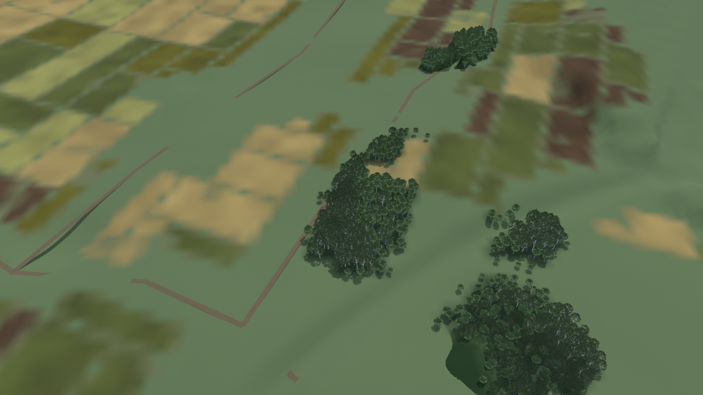
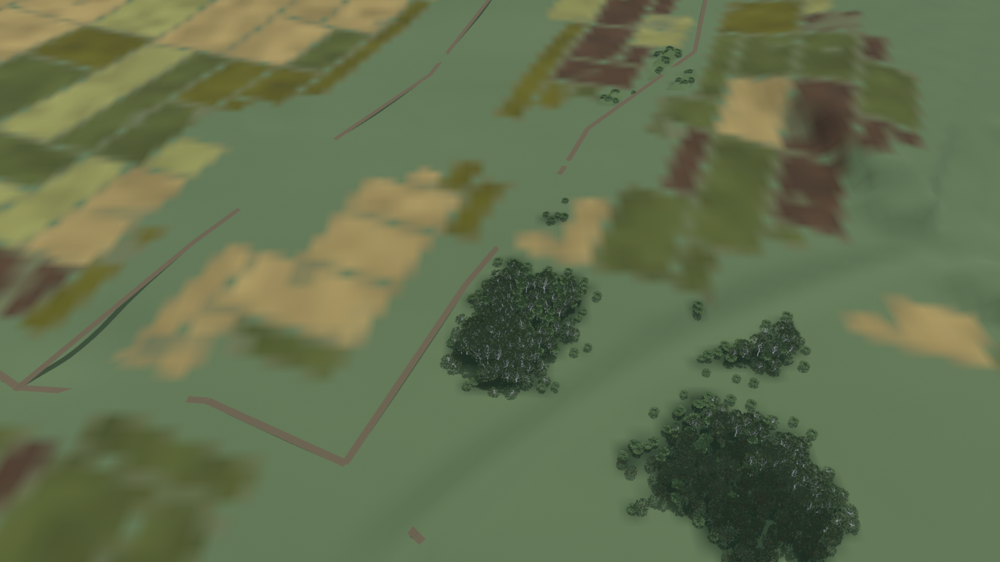

Before: 2d99a10. After: ffb997b + bf1484b. Same production sectors, coordinates, camera pitch, sun and exposure.
Heights are metres above the target terrain; cameras look down at 45 degrees with a 45-degree vertical field of view.
Click any image for the full 1600 x 900 view.
Offline Blender replay of production canopy geometry and submitted tree tiers. These are not Unity/HDRP captures. The harness uses repository tree models, simplified meadow/forest-floor shading, and filtered production crop colours at the farmland edge. It omits buildings, undergrowth dressings and native atmospheric/terrain shading; its midpoint LOD fade approximates HDRP dithering.
Changes and build checklist · Geometry, budgets and camera poses. Unity flight p95 ≤ 11.7 ms remains an integration acceptance check.







